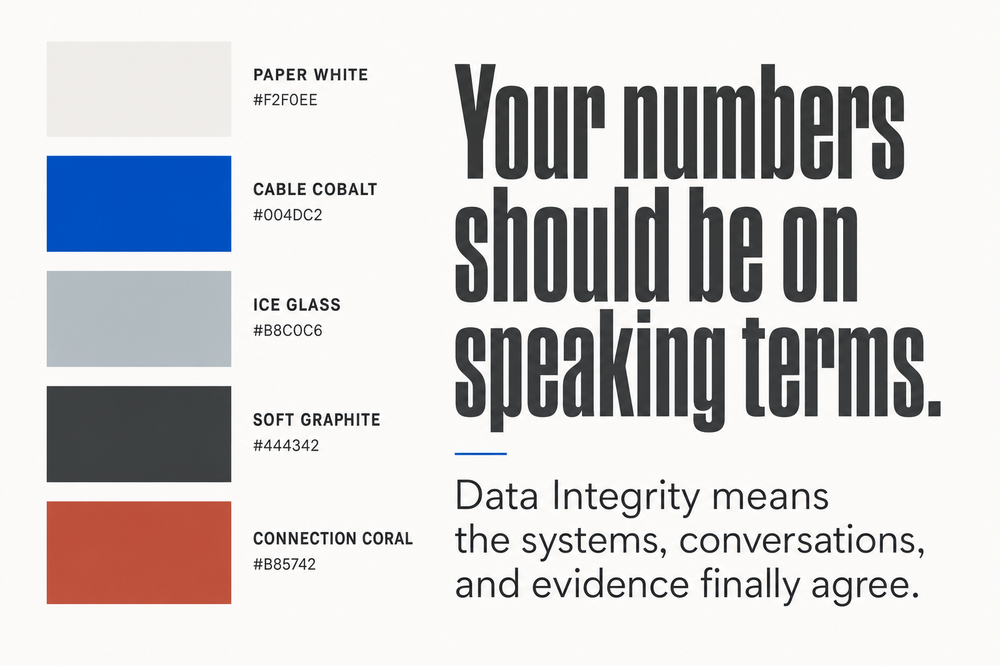

Section B
Look and Feel
Use the colors, fonts, images, and layouts consistently.
On this page
01
Color
Paper White#F2F0EE
Cable Cobalt#004DC2
Ice Glass#B8C0C6
Soft Graphite#444342
Connection Coral#B85742
02
Typography
Barlow Condensed
Your numbers should be on speaking terms
Use for short, direct headlines.
Barlow
Data Integrity means the systems, conversations, and evidence finally agree, even when the finding is uncomfortable.
Use for body copy, labels, and practical detail.
03
Visual rules
